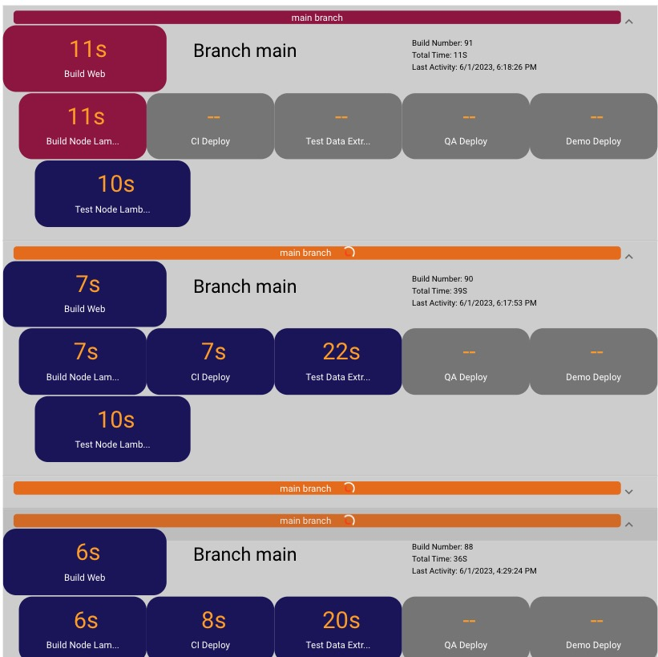

This was the capstone project for my time at Codefi. It was a group project that I worked on with 3 other students over the course of our final month. We were tasked with creating a dashboard that would display the status of CI/CD pipelines for a local start-up, WareHQ Labs. We were given a list of requirements and data with which to test multiple outputs to the dashboard.
Our requirements included several new-to-us technologies, namely Vue.js for the front end and Node.js/Express.js for the back end. We were also required to use Bitbucket for version control, when we were used to GitHub. In addition, we utilized MongoDB for a intermediary database, which was also new to me.
My main contribution to the project was setting up the authorization and authentication, for which the client suggested that we use Auth0. I made sure users couldn't access the site without being logged in, and set up additional authorization checks on the back end so that the dashboard would only display data if the user was logged in with a valid and unexpired access token.
Another contribution involved identifying a method to recognize when a pipeline step was in progress, so that we could display a loading animation. The data would only show a result of "success"or "failure", or "stopped" if it was manually cancelled before completion. If the step was still in progress or waiting for earlier steps, it would show "undefined", even for steps that needed a manual start. We didn't want pending steps to show the loading animation, only the current step if in progress. I was able to identify a method to check if the step had a start time, but no end time, and only display the loading animation if this was the case.